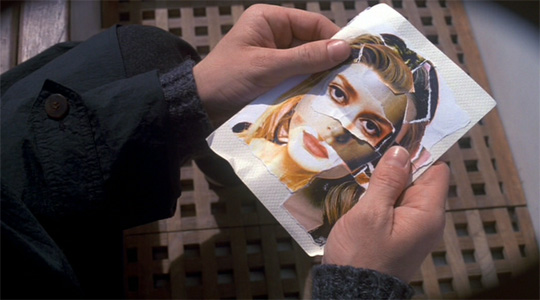

Welcome to Film A Day. Flippant film criticism. Daily.
Join the Conversation
#FilmADay #FilmInAFrame
July 01

July 02
July 03
July 04
July 05
July 06
July 07
July 08
July 09
July 10
July 11
July 12
July 13
July 14
July 15
July 16
July 17
July 18
July 19
July 20
July 21
July 22
July 23
July 24
July 25
July 26
July 27
July 28
July 29
July 30
July 31